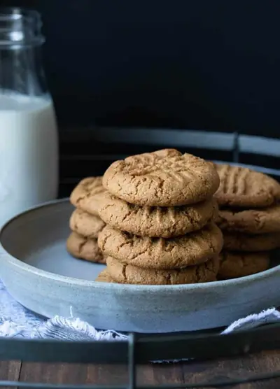

Vegan Gluten-Free Peanut Butter Cookies

Ingredients
- 1½ cups fine ground almond flour
- 1½ teaspoons baking soda
- ¼ teaspoon sea salt (see note)
- ½ cup creamy or crunchy peanut butter (see note)
- ½ cup maple syrup
- 2 tablespoons oat flour (take out 2 tablespoons of the almond flour and sub with this oat flour)
Steps
- Preheat oven to 350 degrees F / 175 C.
- Put flour, baking soda, and salt in a bowl. Whisk well to remove clumps and combine.
- Make a well in the middle and add peanut butter and maple syrup.
- Stir to get everything mixed well.
- Form into balls and put on a parchment lined cookie sheet.
- Using a fork, make a criss cross pattern on the top of the cookies as you press down the balls.
- Bake for 13 minutes. Until just beginning to brown on the edges. They cook more as they cool, if you overbake they will be dry.
Recipe by Anjali Shah, from The Picky Eater. Saved here for personal use; the original has the full notes, tips and photos. Open original